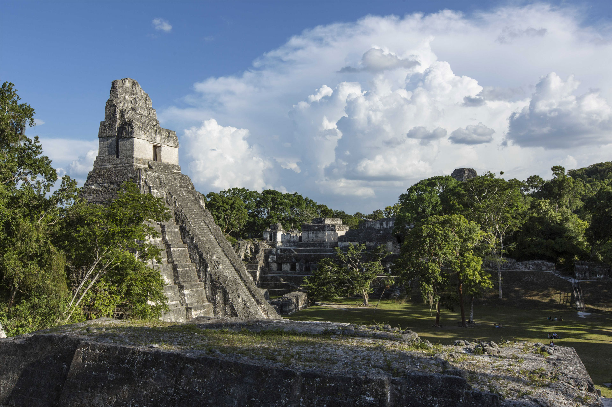

川普與蔡英文通電話後，中國立刻挖走聖多美普林西比、派軍艦繞台、甚至要求與台灣無邦交的奈及利亞，終止對台外交關係，台灣的外交問題再次引起各界討論。長久以來，許多民眾認為台灣每年花費數十億元援助這些在國際政治影響力不高的邦交國根本沒用，就算斷光光也沒差。真的沒差嗎？如果有差 ，差在哪裡？最差又會到什麼程度？現在請先想像，在未來某一天，外交部召開緊急記者會，宣佈最後一個邦交國，確定與台灣斷交……
雪崩式斷交即將發生？
如果台灣沒有邦交國會怎樣？
文／財經組、周家睿 圖／東方IC 視覺設計／陳怡蒨 網頁製作／江鎧至
川普與蔡英文通電話後，中國立刻挖走聖多美普林西比、派軍艦繞台、甚至要求與台灣無邦交的奈及利亞，終止對台外交關係，台灣的外交問題再次引起各界討論。長久以來，許多民眾認為台灣每年花費數十億元援助這些在國際政治影響力不高的邦交國根本沒用，就算斷光光也沒差。真的沒差嗎？如果有差 ，差在哪裡？最差又會到什麼程度？現在請先想像，在未來某一天，外交部召開緊急記者會，宣佈最後一個邦交國，確定與台灣斷交……Ｑ１：
Ｑ１：一旦所有邦交國陸續與台灣斷交，國內初期會發生哪些狀況？
Ａ：
Ａ：雖然目前發生斷交事件時，民眾似乎無感，然而一旦發生雪崩式斷交，邦交國一個一個被挖走，危機感就會產生，人心不安、股市震盪甚至引發移民潮都是可以想像的。
「當邦交國少到剩個位數時，台灣內部就會開始吵，偏綠的人可能會主張，既然國際社會都不承認中華民國，那台灣就不要叫中華民國了，因為已經沒有意義了。」前民進黨中國事務部主任、現任健行科大國際合作處處長顏建發教授這麼說。
Ｑ２：
Ｑ２：台灣不被國際承認，會不會消失？
Ａ：
Ａ：一個國家在國際上是否被承認有兩派說法，一是必須在國際上有國家承認某個國家的政權對內有絕對的治理權，對外則承認這個國家跟其他國家是平等的，否則任何一群人佔領一塊土都能宣稱自己擁有這塊土地與人民的治理權。
另一派說法則是認為，一個國家一旦被國際所承認，就算後來全無邦交國承認，「國家承認」也不會消失，同時，承認的內容並非國家，而是政府，例如聖多美普林西比就是「承認」中華人民共和國政府是中國的合法政府；也就是說，中華民國不會因不受國際「承認」，而成為沒主權的非國家。
Ｑ３：
Ｑ３：中國搶走台灣所有邦交國之後，台灣與美、日關係是否會動搖？
Ａ：
Ａ：與台灣關係密切的美國和日本，念在戰略與經貿的利益的份上，可能會發表聲明，與台灣的友誼不會因此而動搖，甚至對中國提出警告，美、日、中、台關係緊張。
Ｑ４：
Ｑ４：接下來中國可能採取哪些手段？
Ａ：
Ａ：即使目前台灣仍有邦交國的情況，中國已對外宣稱台灣不是主權獨立的國家，一旦台灣沒有邦交國，可以想見，中國更會以此為藉口，在國際上大作文章，並可能一不做二不休，在各方面對台灣採取更激烈的打壓。
打壓的手段之一，就是中國可能會開始在台灣已經加入的各個國際組織內，質疑我們的資格，意圖將台灣逐出這些組織。
Ｑ５：
Ｑ５：台灣有可能被逐出已加入的國際組織嗎？
Ａ：
Ａ：台灣本來就不是以國家的名義加入這些國際組織，而且也不是每個會員國都買中國的帳，他們可能不甩中國的施壓，認為該講理的時候還是得講理，中國的排擠手段便會受挫，因此台灣的會員資格不會有什麼影響，更何況台灣目前加入了58個國際組織，中國要完全操控這麼組織幾乎不可能。
Ｑ６：
Ｑ６：若往最糟的狀況設想，一旦台灣被迫全面退出所有的國際組織，會有什麼影響？
Ａ：
Ａ：政大外交政策研究中心主任黃奎博教授認為，雖然不是所有的國際組織對台灣有直接的利益，但仍有它的好處，第一，學習組織的運作，了解國際目前關切的特定議題與採取的作法；第二，提昇台灣官員的眼界和行政規劃能力。黃奎博解釋，一旦台灣被排除在國際社會之外太久，國內的公務員不清楚國際社會在做什麼，我們的行政治理、各式各樣的制度，會逐漸跟不上國際的腳步，政府體系的決策素質會出問題。
黃奎博說：「國際組織的成員，常常針對議題開會、討論，例如飛安管制，若我們沒有參加國際民航組織，雖然可以詢問其他國家或是從網路等各方管道查到會議的結果、得知改變了哪些制度，但一定要參加開會討論，才知道為什麼其他國家會這麼做、他們的觀念、思考邏輯已經發展到什麼程度，這是非常重要的。」若與國際社會脫節，長久下來，官員的見識和決策素質就會受影響。「雖然我們的公務員每年都出國考察，但考察也就是跟對方喝喝咖啡，不會談得多深入。」

Ｑ７：
Ｑ７：無法得知國際組織開會討論的細節，有辦法彌補嗎？
Ａ：
Ａ：顏建發也認為台灣若不參與國際組織，無法得知開會討論的細節確實有影響，他舉例說，陳水扁第二次執政時，他擔任民進黨中國事務部主任，一開始他要去外交部調閱台灣與中國的重要外交文件，外交部卻以保密為由，不讓他查看，或只給他看資料的一部分。
「可是我不在乎，因為我長期研究中國問題，中國外交狀況有一些瞭解，腦中有一份拼圖，我看一部分資料就能知道它的含意，把缺的那塊補起來，後來黃志芳（時任外交部長）要他們給我看那些公文，我才發現還是有差，因為能看清楚前因後果和更多細節。現在回想，當時我做決策，就算沒看那些公文照樣能做判斷，但是有的話會更好。」顏建發說，如果台灣真的被國際組織排除在外，又想與國際接軌，就只能自立自強，靠自己做研究，雖然能繼續存活，但會比較辛苦。
Ｑ８：
Ｑ８：沒有邦交國的話，台灣就能把援助邦交國的金費來做國內建設或社會福利不是很好嗎？
Ａ：
Ａ：顏建發認為應該把這筆錢轉移到維持美、日的關係，平時資助其社會福利，當他們發生大型天災人禍時大幅援助，提昇美、日人民對台灣的好感，穩定台灣與美、日的關係，「外交就是交朋友，朋友要交有用的朋友，即使不奢望美、日會保護我們，但至少是個靠山。」

Ｑ９：
Ｑ９：若無邦交國，台灣經濟會受影響嗎？
Ａ：
Ａ：學者們認為，基本上過去台灣與其他國家簽訂的貿易協定，並不會因為台灣沒有邦交國而被取消，而如果沒有邦交國，也能跟過去一樣，以其他名義與各國簽約，與現況無異。
各界工商代表也認為，沒有邦交國對台灣在經濟上並不會影響太大。工商協進會理事長林伯豐表示，觀察去年進出口貿易量，我國第一大出口市場為中國大陸（含香港），占出口比重39.4％；第二名是東南亞國協（10國），比例為18.1％；其次是美國，占整體出口比重12.1％；反觀22個邦交國，合計出口比重則不到2％，所以政府對於沒有邦交的國家應該有更積極的作為。
全國商業總會理事長賴正鎰也說：「我們現在的貿易，根本就不是靠那些邦交國，就算真的斷交，也只是在情感上有些許受傷，實際上並不會對台灣經濟造成太大影響。」工總副理事長林明儒則進一步指出：「以目前的情況來看，沒有邦交國的問題還比較單純，與中國大陸的關係變得更加緊張才是大問題。」林明儒表示，現在包括RCEP、TPP台灣幾乎無法打入，反觀韓國、日本都在簽區域貿易協定，讓產業相當憂心，「我們往後要再簽訂什麼協定大概很困難了，但這是政治問題，業者也無法解決，只希望政府在美、中、台之間能取得一個平衡。」
Ｑ１０：
Ｑ１０：為什麼工商代表這麼在意經貿協定？它有什麼重要？
Ａ：
Ａ：經貿協定確實是台灣在國際經貿上的關鍵。黃奎博指出，中國對台灣在國際經貿的打壓從不間斷，2013年，台灣與紐西蘭、新加坡簽完貿易協議之後，中國馬上警告馬來西亞與智利不要輕舉妄動，「TPP（跨太平洋戰略經濟夥伴關係協議）、RCEP（區域全面經濟夥伴關係協定）、FTA（自由貿易協定）、WTO（世界貿易組織）這四條路，台灣沒有一條走得順的，整個環境這樣的發展對我們整體來講，只要卡在關稅就輸人家一節，大企業可能尋第三方管道，或是在外國設廠就沒事了，但是對中小企業影響就很大。」
這可能是中國意圖斷絕台灣在國際經貿的通路，迫使台灣不得不向中國大幅靠攏，進而掐住台灣經濟命脈。顏建發也認為，與其他國家簽署貿易協定非常重要，而貿易協定分兩種，一種是幾個國家一起簽署的多邊貿易協定，這種貿易協定，中國就會出面阻撓台灣加入，另一種則是兩國之間的雙邊貿易協定，台灣可以暗中與其他國家簽訂這種協議。

Ｑ１１：
Ｑ１１：假設台灣沒有邦交國後，中國對台灣的國際經貿打壓加劇，導致台灣無法與其他國家簽訂貿易協定又會如何？
Ａ：
Ａ：顏建發預測，台灣出口產業，就會遇到高關稅的問題，導致許多廠商外移，國內會空虛化，「我們可能要改變產業形式，少做出口貿易，政府也要推動新的產業來填補產業外移後造成的空洞，且這些新產業必須像現在的高科技產業，能避開關稅障礙的問題，影響就不會那麼大；影響最大的是傳統產業，到那個時候，傳統產業必須適應這個環境，商品的利益有很多構成的要素，關稅只是其中一部分，這些產業可以從提昇生產力與人力資源各方面的管理，來彌補關稅的差距。」
不過顏建發也說：「這些當然說得容易，做起來很難，但如果台灣真的走到這一步，這就是台灣人的命運，必須勇敢面對，找出一條活路，就像即使肢體殘缺的人也能活下去，雖然會比較辛苦。」
Ｑ１２：
Ｑ１２：要是台灣沒有邦交國，情勢又發展到這種地步，若台灣撐不下去，選擇傾向與中國統一呢？
Ａ：
Ａ：「遠的歷史不說，這幾十年來美國曾經搞過阿富汗、伊拉克這幾個國家的政權，所以它也可能用各種手段把台灣內部搞亂，國際上涉及到利益的時候，美國也是很野蠻的。」顏建發提出這樣的觀點。
Ｑ１３：
Ｑ１３：台灣到底有沒有可能面臨零邦交國的狀況？
Ａ：
Ａ：顏建發與黃奎博都認為不太可能，中國不會閒閒沒事花那麼多錢收買那麼多國家，而且這會影響中國的國際形象，除非兩岸關係惡劣到極致，中國才可能出這狠招，然而那時兩岸可能已經處於戰爭邊緣，中國也沒必要浪費時間、力氣去做這種外交動作。況且正如文章一開始提到，這種全面挖角的動作，可能會加速將台灣推向獨立的路上，這也不是中國所樂見的。

結論：
結論：以上都是台灣沒有邦交國後，各種最壞的處境與發展的臆測，無論如何，各方都認為，如果所有邦交國與台灣全面斷交，雖然沒有太大的影響，但台灣更要維持自己的經濟實力、民主化、人民素質與國際戰略地位，提昇自身的價值，讓其他國家認為台灣還「有利可圖」，如此一來，才能繼續在國際生存，畢竟國際社會不是相親相愛的大同世界，而是一個現實戰場。